This page containes spoilers about How to Train Your Dragon.
Characters
This is information on some of the characters included in How to Train Your Dragon.
Hiccup
Hiccup is the main character in How to Train Your Dragon. His full name is Hiccup Horrendous Haddock III. He is the son of Stoick the Vast and became the chieftain of Berk after Stoick died during How to Train Your Dragon 2. At the end of How to Train Your Dragon: Hidden World he marries Astrid.
In the beginning of the How to Train Your Dragon storylines, Hiccup works at Gobber's blacksmith forge making weapons and fixing them for the peoplem fighting dragons. Then he shot down Toothless but his father did not believe him. When his father left to look for the nest of dragons, he got put in training for fighting dragons but he had already found Toothless in the woods and realized that he did not want to be like everyone else on Berk. He did not want to kill dragons. Later on in the first movie, he started training Toothless and then helped to change everyone else's opinion about dragons and get himself accepted by the rest of the viking community.
Throughout the TV Show Seasons, he leads the Berk dragon riders to new place to find new dragons to train and defeat new enemies that treaten the dragons and his home. He also creates many inventions that are seen more in the movies such as DragonFly 1, DragonFly 2, the DragonBlade, and more.
In the final two movies, he stops dragon hunters and becomes the leader of Berk.
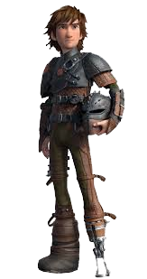Astrid
Astrid is the rational one of the dragon riders and always has some sort of weapon nearby. Her full name is Astrid Hofferson. When she sets her mind on something, nothing can stop her. She rides Stormfly, a deadly nadder, and marries Hiccup at the end of the third movie. She is Hiccup's most suppotive friend but is the blunt voice of reason when his ideas are a little out there. Her favorite weapon is an ax that she can either throw or slice with. Snotlout gets himself in trouble by taking her favorite and mouthing off to her.
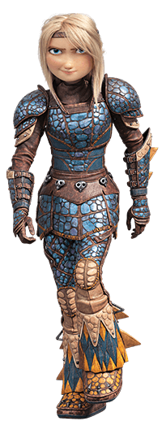Fishlegs
Fishlegs is the dragon nerd of the village. His full name is Fishlegs Ingerman. He rides Meatlug, a gronckle, and created dragon flashcards with little bits of information on diffrent dragons. Unlike most of the riders he is not into breaking the rules. He tries to get out of any activites that might end with a broken rule even through he rarely gets out of anything.
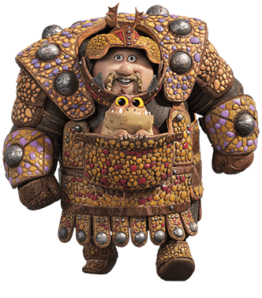Ruffnut
Her full name is Ruffnut Thorston and she is half of the pranking brother-sister twin team. With her brother, Tuffnut, she rides a hideous zippleback named Barf and Belch. After it was clear that Hiccup and Astrid were going to be together, she became the last single lady on Berk and all of the male riders compete for her attention.
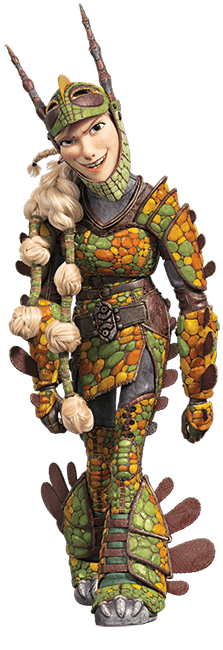Tuffnut
His full name is Tuffnut Thorston and he is half of the pranking brother-sister twin team. With his sister, Ruffnut, he rides a hideous zippleback named Barf and Belch. After it was clear that Hiccup and Astrid were going to be together and his sister became the last single lady on Berk and now he has to watch all of the other male riders compete for her attention.
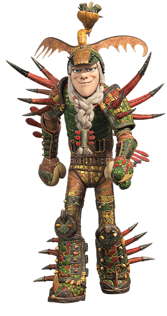Snotlout
His full name is Snotlout Jorhenson and he always thinks that he is the best. He rides a monstrous nightmare named Hookfang. He uses a hammer as his weapon and often acts and speaks without thinking first and that leads him to making really bad mistakes.
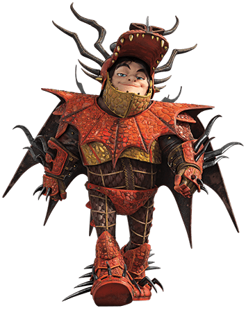Stoick
His full name is Stoick the Vast and he was the chieftain of Berk untill Drago killed him during the second movie. During the movies and TV shows, he had two dragons first Thornado, a thunderdrum, then Skullcrusher, a rumblehorn, after releasing Thornado. He is Hiccup's father.
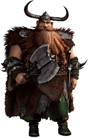Valka
Valka, Hiccup's mother and Stoick's wife, was abducted in a dragon attack shortly after Hiccup was born. She rides the dragon who saved her, Cloudjumper a stormcutter, to protect dragons from Drago. Later on, she is reunited with the rest of her family.
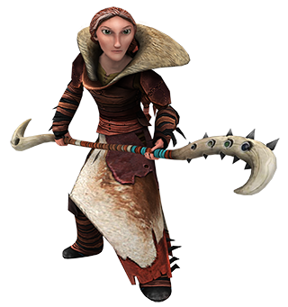Gobber
Gobber, also called Gobber the Belch, before Berk became a place for training dragons instead of killing them was responsible for training the younger people on how to kill dragons. Also, he is the village blacksmith making weapons and then making saddles and other tools for dragons. At times, he preforms dragon denistry and he rides a hotburple named Grump.
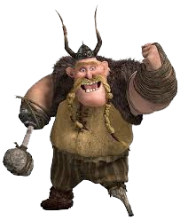Eret
Eret's full name is Eret son of Eret. He is self proclaimed "Greatest Dragon Trapper Alive." After Stoick died he took care of Skullcrusher and started flying with him. He starts helping the riders during the second movie by giving them information about the diffrent dragon hunters to help the riders make plans.
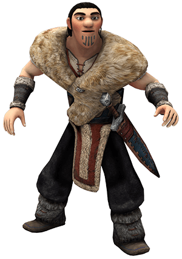Dagur
When he is announced arriving at Berk, his full title is High Chief of the Berserker tribe, Cracker of Skulls, Slayer of Beasts, the Great and Fearsome, Dagur the Deranged. Early in the TV Show seasons, he fights against the dragon riders earning 3 years in Outcast Prison until he breaks out and aligns himself with Viggo Grimborn. After his sister, Heather, was captured he changed his life. He aligned himself with the dragon riders, got two dragons, a gronckle named Shattermaster and Sleuther, a triple stryke. As well as marring Mala.
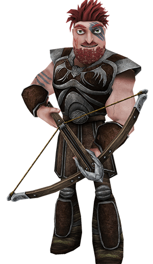Ryker
Ryker Grimborn is one of the major villians in How to Train Your Dragon Race to the Edge. He is one of the leaders of the dragon hunters second only to his brother Viggo.
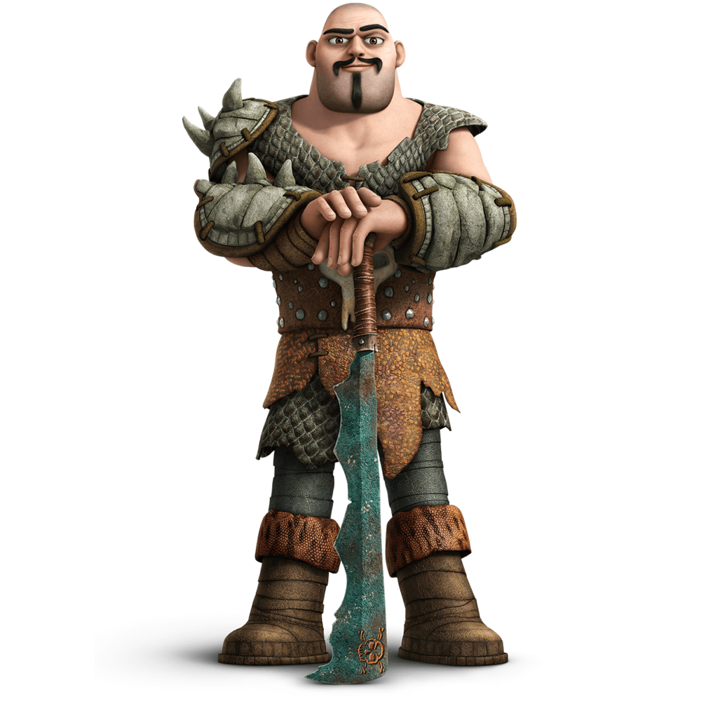Viggo
Viggo is the brains behind the dragon hunters and tries to stop Hiccup from freeing all the dragons.
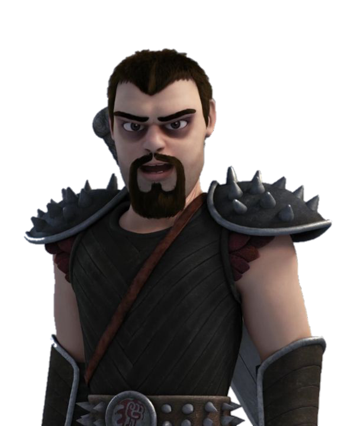Drago
Drago is the villian in the second movie. He lived on Berk for a time and has no tolerance for disagreeing people. He controls a "King of Dragons" and used it to control dragons to destroy Berk.
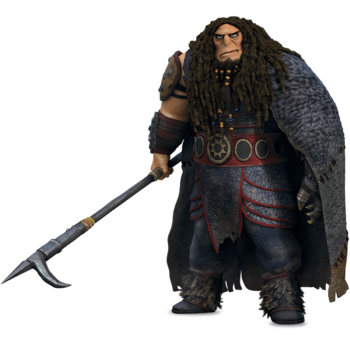Heather
Heather is Dagur's sister and she rides Windshear a Raserwhip. She is a part of the dragon riders for a time but then leaves to help rebuild Berserker Island.
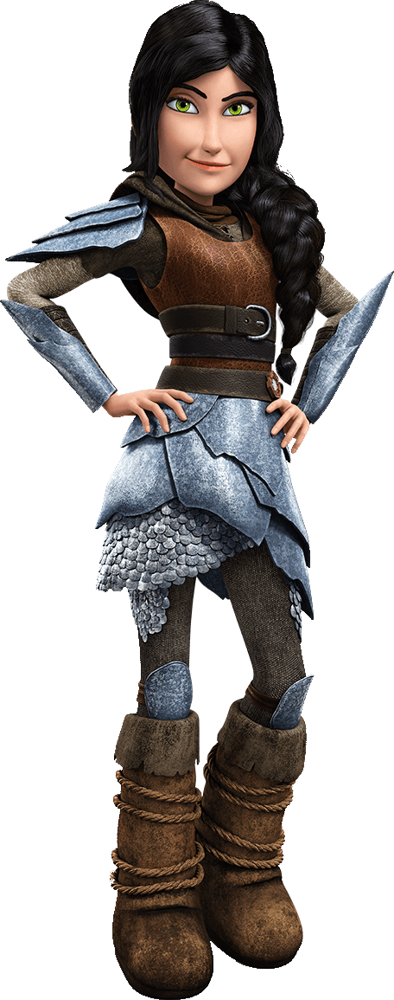Johann
Johann is introduced as a traveling merchant that appears loyal to Berk, but then he betrays them so he can get the "King of Dragons.
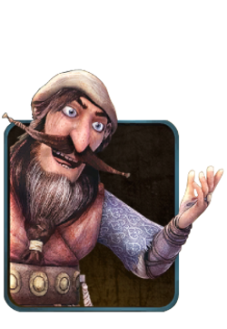Krogan
Krogan works for Drago and works to get him a "King of Dragons" by using singetail dragons to attack the riders.
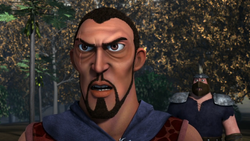Savage
Savage was an Outcast but then became a Berserker. When Dagur started working with the dragon riders, he did not like that so he started a coo and took control of the island for a litte while.
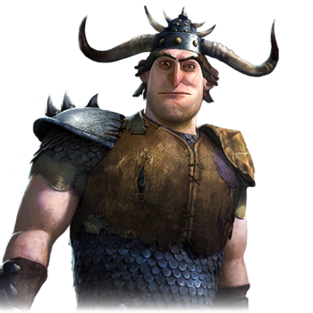Gruffnut
Gruffnut is Tuffnut and Ruffnut's cousin that tried to steal their dragon to pay off a debt and use them to get something for him.
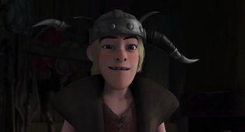Mala
Mala is the queen of the Defenders of the Wing and one of the riders allies, even though they got off to a rockey start. Also, she marries Dagur at the end of Race to the Edge.
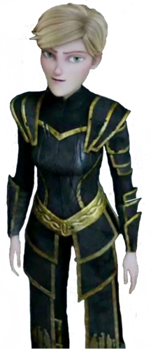Throk
Throk is one of the named Defenders of the Wing people and has a crush on Ruffnut after she saved him from falling rocks.
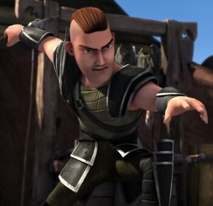Atali
Atali is the leader of Wingmaiden Island and one of the riders' allies against the hunters. Her tribe raises raserwhip babies and fly with them on their backs.
. 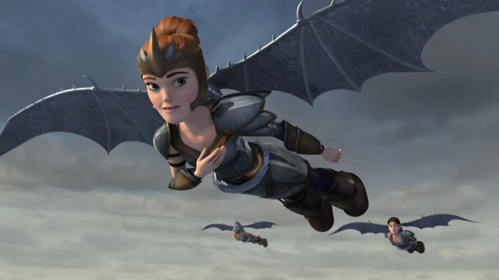Bucket
Bucket lives on Berk and is a member of the A-Team riding a hideous zippleback named Whip and Lash with Mulch.
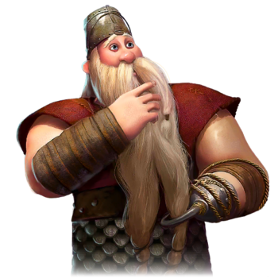Mulch
Mulch lives on Berk and is a member of the A-Team riding a hideous zippleback named Whip and Lash with Bucket.
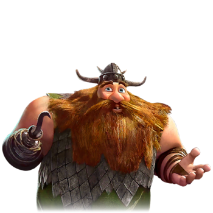Alvin
Alvin the Treacherous is the leader of Outcast Island and was Stoick's best friend growing up but got sent away for not following orders and fought them for a time but Berk and Outcast Island become allies.
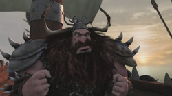Mildew
Mildew lived on Berk but worked for the Outcasts because he did not like dragons and he wanted them off the island.
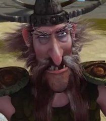Gustav
Gustav lives on Berk and is the leader of the A-Team riding a monstrous nightmare named Fanghook.
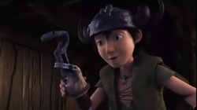Gothi
Gothi lives on Berk and is a member of the A-Team riding a gronckle named {(^_^)}'s<^),,//,,)~ which means Gothi's Gronckle.
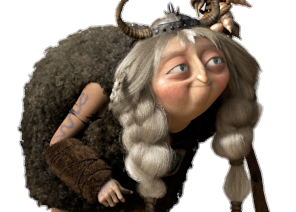Spitelout
Spitelout lives on Berk and is a member of the A-Team riding a deadly nadder named Kingstail. Also he is Snotlout's father.
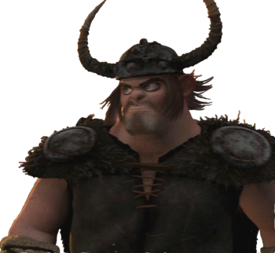Minden
Minden is the Wingmaiden who found the Dragon Eye Len hidden in the island.
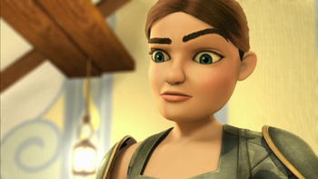Sven
Sven lives on Berk and is a member of the A-Team riding a monstrous nightmare with an unknown name.
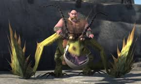Chicken
Chicken is Tuffnut's pet while he lived on Dragon's Edge. Tuffnut does everything with Chicken and always gives her the best of everything.
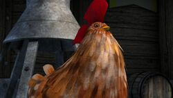Toothless
Toothless is a night fury in the strike class of dragons. His rider is Hiccup and they will go out of their way to protect each other.

Stormfly
Stormfly is a deadly nadder in the tracker class of dragons. Her rider is Astrid and they will go out of their way to beat the rest of the riders in games and defeat enemies.
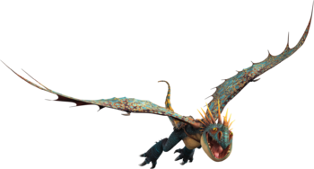Barf and Belch
Barf and Belch is a hideous zippleback in the mystery class of dragons. His riders are Ruffnut and Tuffnut and the four of them will go out of their way to prank the rest of the riders.
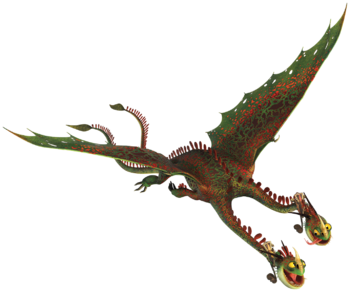Grump
Grump is a hotburple in the boulder class of dragons. His rider is Gobber and Grump helps Gobber with his work but he is very lazy and falls asleep a lot even while flying.
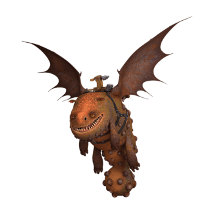Hookfang
Hookfang is a monstrous nightmare in the stoker class of dragons. His rider is Snotlout and while other dragons do what their riders say he makes a point of doing the opposite in training setting Snotlout's pants on fire more thsn a few times.
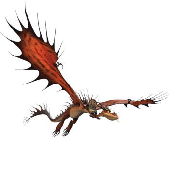Light Fury
Light Fury is just like a night fury except she is white. At the end of the third movie her and Toothless leave the breed to save their species.
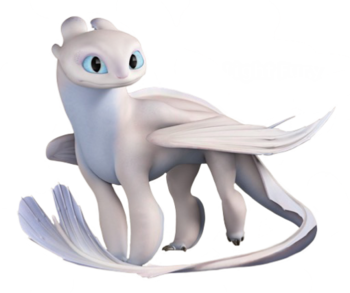Meatlug
Meatlug is a gronckle in the boulder class of dragons. Her rider is Fishlegs and they will go out of their way learn more about anything and unlike most of her species she is sweer and affectionate, she licks her riders feet when he falls asleep.
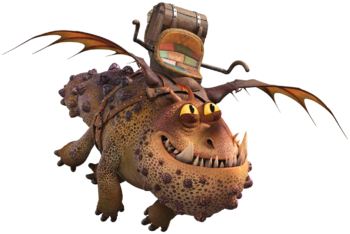Cloudjumper
Cloudjumper is a stormcutter in the sharp class of dragons. His rider is Valka and he is dragon who saved her during a dragon attack and helps her save dragons from traps.
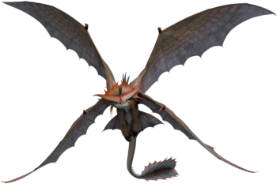Skullcrusher
Skullcrusher is a rumblehorn in the tracker class of dragons. His rider is Stoick but them becomes Eret and he can track things for miles on smell.
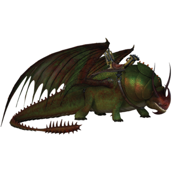Smidvarg
Smidvarg is the leader of the night terror flock that lives on Dragon's Edge.
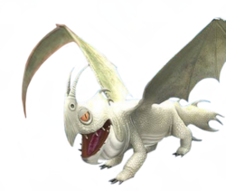Night Lights
The Night Lights are the three offspring of the Light Fury and Toothless. They each look very diffrent. One of them is mostly white with touches of black and green eyes. The another one is mostly black with touches of white with blue eyes. The last one is mostly black with white feet and green eyes.
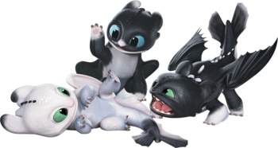Thornado
Thornado is a thunderdrum in the tidal class of dragons. His rider was Stoick but he was released to protect three baby thunderdrums: Bing, Bang, and Boom
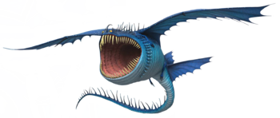Garffiljorg
Garffiljorg is a death song the riders saved as a egg that was released to Melody Island. Later he came back and became friends with Stormfly.
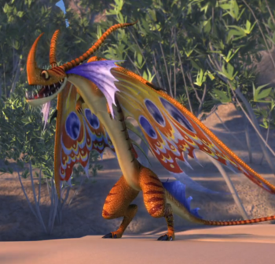Shattermaster
Shattermaster is a gronckle in the boulder class of dragons. His rider is Dagur and he is the first dragon Dagur had and was hurt when the Shellfire attacked.
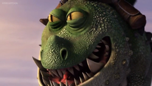Sleuther
Sleuther is a triple stryke in the strike class of dragons. His rider is Dagur and he is Dagur's second dragon. Sleuther was saved from dragon fights held by the hunters.
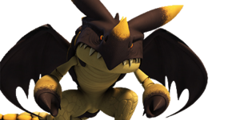Wingnut
Wingnut is the raserwhip baby that Ruffnut trained with the Wingmaidens and then gave to Atali.
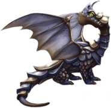